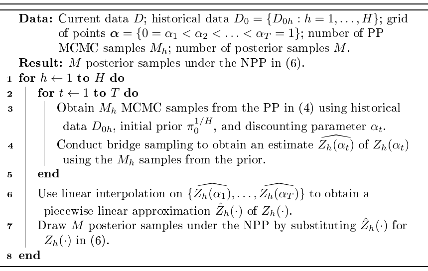
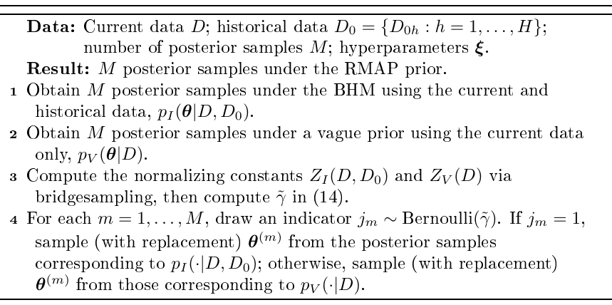
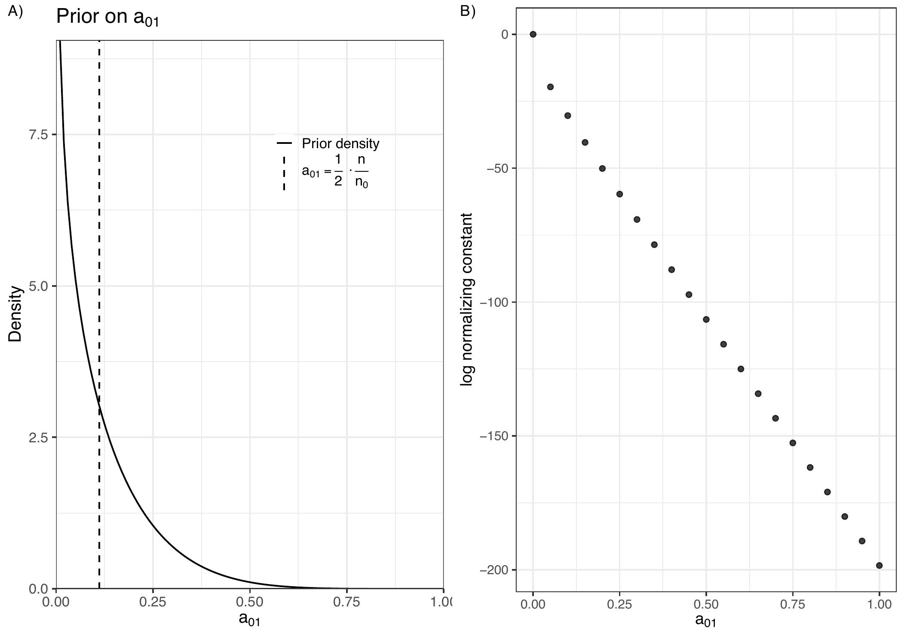
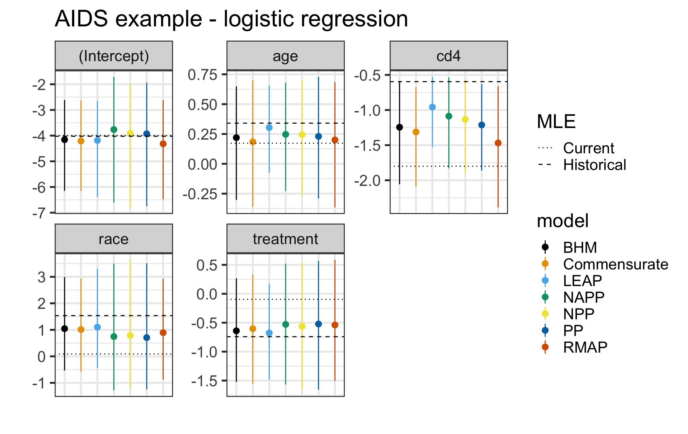
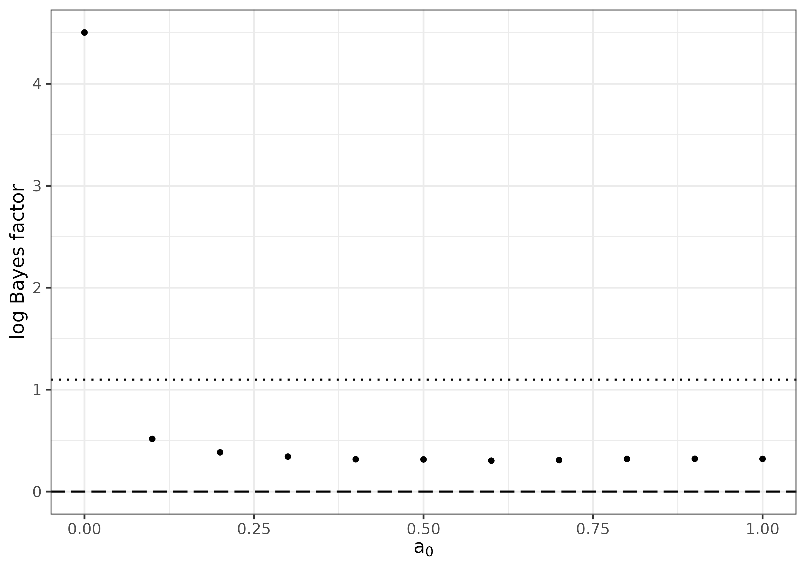

There has been increased interest in the use of historical data to formulate informative priors in regression models. While many such priors for incorporating historical data have been proposed, adoption is limited due to access to software. Where software does exist, the implementations between different methods could be vastly different, making comparisons between methods difficult. In this paper, we introduce the R package hdbayes, an implementation of the power prior, normalized power prior, Bayesian hierarchical model, robust meta-analytic prior, commensurate prior, and latent exchangeability prior for generalized linear models. The bulk of the package is written in the Stan programming language, with user-friendly R wrapper functions to call samplers.
A common occurrence in practical applications of Bayesian modeling is the use of historical data to inform the prior for the analysis of the data set at hand, which we refer to as the current data. For example, in clinical trials, one may be in possession of a Phase III data set in addition to the Phase II trial already completed. In such cases, it is often desirable to elicit an informative prior for the regression coefficients based on the historical data.
Many methods for incorporating historical data have been proposed,
including the power prior (Ibrahim and Chen 2000), the normalized power
prior (Duan et al. 2006; Carvalho and Ibrahim 2021), the Bayesian
hierarchical model, commensurate priors (Hobbs et al. 2012), and robust
meta-analytic predictive priors (Schmidli et al. 2014). Unfortunately,
software implementations of these methods may be difficult to come
across. Where they do exist, the implementations can differ so
substantially that it becomes troublesome to utilize multiple packages
to compare methods. For example, the
RBesT package (Weber et
al. 2021), which implements the robust meta-analytic predictive prior,
accepts data in an aggregate format where each row represents a study or
group and uses a single function that accommodates Gaussian, binomial,
and Poisson models. In contrast, the
NPP package (Han et al.
2021), which implements the normalized power prior, provides separate
functions for different outcome types, each requiring a distinct data
format. For instance, NPP::LMNPP_MCMC() requires users to provide
vectors of individual-level responses for the current and historical
data, whereas NPP::BerNPP_MCMC() requires a vector of two elements
(number of trials and number of successes) for each data set.
Furthermore, many existing implementations rely on Metropolis-type
samplers, which can be difficult to tune.
The R package hdbayes aims to fill this gap. In particular, hdbayes offers user-friendly R functions to conduct Bayesian analysis for generalized linear models (GLMs) using historical data, with consistent syntax across methods. The backbone of the package is written in the Stan programming language (Carpenter et al. 2017), implemented in the cmdstanr package (Gabry et al. 2024). Although cmdstanr is not available on CRAN, hdbayes uses the instantiate package (Landau 2024), which depends on cmdstanr, to create pre-compiled code. Stan utilizes a highly efficient Markov chain Monte Carlo (MCMC) method known as Hamiltonian Monte Carlo (HMC), which requires little-to-no tuning from the user’s perspective. In particular, Stan implements a highly optimized variant of the No U-Turn Sampler (NUTS) algorithm (Hoffman et al. 2014).
The package hdbayes is
available on CRAN. By default, R installs binary builds on Windows and
macOS. In these cases, the Stan models included with the package are not
compiled during installation, and users may encounter a
“model not compiled” error when using
hdbayes. To ensure
compilation, we recommend installation from source:
install.packages("hdbayes", type = "source")Using hdbayes also requires the package cmdstanr and CmdStan (the command-line interface to Stan). Detailed instructions for installing both are provided in the cmdstanr documentation.
The remainder of this paper proceeds as follows. In Section 2, we review methods for prior elicitation using historical data that are implemented in the hdbayes package, indicating any existing publicly available implementations for each prior. We provide methodology and code examples for model selection via marginal likelihoods in Section 3. In Section 4, we illustrate the utility of our package via analyses of real data sets in AIDS clinical trials, comparing posterior results across all implemented priors in hdbayes. We close with some discussion in Section 5.
In this section, we review the priors implemented in the hdbayes package. Where applicable, we also discuss existing software implementations for each prior. We focus on prior elicitation for generalized linear models (GLMs) (McCullagh and Nelder 1989), whose likelihood function is given by \[\begin{align} L(\boldsymbol{\mathbf{\beta}}, \phi | \boldsymbol{\mathbf{y}}, \boldsymbol{\mathbf{X}}) \propto \prod_{i=1}^n \exp\left\{ \frac{1}{a_i(\phi)}\left[ y_i \theta_i - b(\theta_i) \right] + c(y_i, \phi) \right\}, % \label{eq:glm_likelihood} \end{align} \tag{1}\] where \(\theta_i = \theta(\boldsymbol{\mathbf{x}}_i'\boldsymbol{\mathbf{\beta}})\), \(\theta(\cdot)\) is referred to as the \(\theta\)-link function, and \(b(\cdot)\) and \(c(\cdot, \phi)\) are determined by the underlying probability distribution. The vector \(\boldsymbol{\mathbf{\beta}}\) is a \(p\)-dimensional vector of regression coefficients corresponding to the \(p \times 1\) vector of covariates \(\boldsymbol{\mathbf{x}}_i\) (with \(\boldsymbol{\mathbf{X}} = (\boldsymbol{\mathbf{x}}_1, \ldots, \boldsymbol{\mathbf{x}}_n)'\)), both of which may include an intercept. The response variable is denoted by \(y_i\) (and \(\boldsymbol{\mathbf{y}} = (y_1, \ldots, y_n)'\)), and \(\phi > 0\) is a dispersion parameter, which is known and equal to \(1\) for binomial and Poisson models. For ease of exposition, we assume \(a_i(\phi) = \phi\). Note that GLMs are sometimes parameterized in terms of the mean of the \(i^{th}\) observation, \(\mu_i\), using the \(\mu\)-link function \(g(\mu_i) = \boldsymbol{\mathbf{x}}_i'\boldsymbol{\mathbf{\beta}}\). In this case, \(\theta(\cdot) = (\dot{b}^{-1} \circ g^{-1})(\cdot)\), where \(\dot{f}\) denotes the first derivative of the function \(f\). When \(a_i(\phi) = \phi\), the likelihood in (1) can be expressed in matrix form as \[\begin{align} L(\boldsymbol{\mathbf{\beta}}, \phi | \boldsymbol{\mathbf{y}}, \boldsymbol{\mathbf{X}}) \propto \exp\left\{ \frac{1}{\phi} \left[ \boldsymbol{\mathbf{y}}'\theta(\boldsymbol{\mathbf{X}} \boldsymbol{\mathbf{\beta}}) - \boldsymbol{\mathbf{1}}_n' b(\theta(\boldsymbol{\mathbf{X}}\boldsymbol{\mathbf{\beta}})) \right] + \boldsymbol{\mathbf{1}}_n' c(\boldsymbol{\mathbf{y}}, \phi) \right\}, % \label{eq:glm_likelihood_matrix} \end{align} \tag{2}\] where \(\boldsymbol{\mathbf{1}}_n = (1, \ldots, 1)'\) is an \(n\times 1\) vector of ones, and the functions \(\theta(\cdot)\), \(b(\cdot)\), and \(c(\cdot, \phi)\) are evaluated elementwise.
Let the current data set be denoted by \(D = \{ (y_i, \boldsymbol{\mathbf{x}}_i): i = 1, \ldots, n \}\), where \(n\) is the sample size of the current data. Suppose we have \(H\) historical data sets, with the \(h^{th}\) historical data set denoted by \(D_{0h} = \{ (y_{0hi}, \boldsymbol{\mathbf{x}}_{0hi}): i = 1, \ldots, n_{0h} \}\) for \(h = 1, \ldots, H\), where \(n_{0h}\) is the corresponding sample size. Let \(D_0 = \{D_{01}, \ldots, D_{0H}\}\) denote the collection of all historical data sets. In what follows, we describe the priors implemented in hdbayes and compare them with several other R packages that provide related functionality for incorporating historical data.
The hdbayes package is
designed to enable users familiar with the R programming language (R
Core Team 2024), particularly its glm() function in the
stats package, to apply
historical data borrowing priors in a unified and user-friendly manner.
To this end, hdbayes
provides a basic syntax that is common across all implemented priors. In
particular, each prior takes the form
glm.prior(formula, family, data.list, prior.args, ...), where
formula is a two-sided formula object, family is a family object
containing a distribution-link function pair, and data.list is a list
of data.frames, with the first element corresponding to the current
data set and the remaining elements treated as historical data sets. The
argument prior.args serves as a placeholder for prior-specific
arguments (e.g., hyperparameters), and the ellipsis (...) passes
additional arguments to the sampler in
cmdstanr (e.g.,
number of chains, warm-up iterations, etc.). Note that the first two
arguments of glm.prior() are identical to those of stats::glm(),
while the third argument differs: glm.prior() takes a list of data
frames, whereas stats::glm() uses a single data frame. Each
implemented prior in
hdbayes also provides
sensible default values for prior.args, making it easy for users to
apply the methods. A summary of the functionality of
hdbayes compared to
other packages is presented in Table 1. Our comparison is restricted to packages
that implement GLMs, although some of them also support survival
analysis functionality.
| Package Name | |||||
|---|---|---|---|---|---|
| hdbayes | NPP | BayesPPD | psborrow2 | RBesT | |
| Power prior | X | ||||
| Normalized power prior | X | X | X | ||
| Normalized asymptotic power prior | X | ||||
| Robust meta-analytic predictive prior | X | X | |||
| Bayesian hierarchical model | X | X | |||
| Commensurate prior | X | X | |||
| LEAP | X | ||||
All models in
stats::glm() |
X | ||||
| \(>1\) historical data set | X | X | X | X | |
| Marginal likelihood calculation | X | ||||
| Survival capabilities | X | X | |||
The power prior (PP) of Ibrahim and Chen (2000), developed for settings with a single historical data set, involves discounting the likelihood of the historical data by a value \(a_{01} \in [0, 1]\) (often referred to as the discounting parameter) along with eliciting an initial prior \(\pi_0\). We may express this mathematically as \[\begin{align} \pi_{\text{PP}}(\boldsymbol{\mathbf{\beta}}, \phi | D_{01}, a_{01}, \pi_0) = \frac{L(\boldsymbol{\mathbf{\beta}}, \phi | D_{01})^{a_{01}} \pi_0(\boldsymbol{\mathbf{\beta}}, \phi)}{Z(a_{01})} \propto L(\boldsymbol{\mathbf{\beta}}, \phi | D_{01})^{a_{01}} \pi_0(\boldsymbol{\mathbf{\beta}}, \phi), % \label{eq:pp_fixeda0_singledataset} \end{align} \tag{3}\] where \(Z(a_{01}) = \int_{\mathbb{R}^p} \int_{0}^{\infty} L(\boldsymbol{\mathbf{\beta}}, \phi | D_{01})^{a_{01}} \pi_0(\boldsymbol{\mathbf{\beta}}, \phi) d\phi ~d\boldsymbol{\mathbf{\beta}}\) is a normalizing constant, whose exact value is unimportant when \(a_{01}\) is fixed.
For fixed \(a_{01}\), the effective sample size of the PP (i.e., the number of observations that the prior is “worth”) is given by \(a_{01} n_{01}\), which is easy to compute. The initial prior \(\pi_0\) is typically chosen to be non-informative, since the goal is for the prior to be primarily informed by the historical data. When \(a_{01} = 0\), the PP reduces to the initial prior, and when \(a_{01} = 1\) the PP is the posterior of the historical data. The PP thus provides a flexible way to incorporate historical information and quantify the informativeness of the prior. Ibrahim et al. (2015) provides an overview of how to select \(a_{01}\). In general, it is recommended to try several values of \(a_{01}\) to see how sensitive the posterior is to the choice of \(a_{01}\).
In hdbayes, we extend the traditional PP to accommodate multiple historical data sets by allowing users to specify a vector of discounting parameters \(\boldsymbol{\mathbf{a}}_0 = (a_{01}, \ldots, a_{0H}) \in [0,1]^H\). Mathematically, we may express this PP as \[\begin{align} \pi_{\text{PP}}(\boldsymbol{\mathbf{\beta}}, \phi | D_0, \boldsymbol{\mathbf{a}}_0, \pi_0) \propto \left[\prod_{h = 1}^{H} L(\boldsymbol{\mathbf{\beta}}, \phi | D_{0h})^{a_{0h}}\right] \pi_0(\boldsymbol{\mathbf{\beta}}, \phi), % \label{eq:pp_fixeda0} \end{align} \tag{4}\] where the initial prior is specified as \[\begin{align} \beta_j &\sim N(\mu_{0j}, \sigma_{0j}^2) \text{ for } j = 1, \ldots, p, \notag \\ \phi &\sim N^{+}(\alpha_0, \gamma_0^2), \label{eq:pp_fixeda0_initialprior} \end{align} \tag{5}\] and \(N^{+}(\mu, \sigma^2)\) denotes a normal distribution with mean \(\mu\) and variance \(\sigma^2\), truncated from below at zero. The half-normal distribution is the special case when \(\mu = 0\). This specification assumes independence between \(\boldsymbol{\mathbf{\beta}}\) and \(\phi\) in the initial prior, while dependence is induced through the historical data whenever at least one \(a_{0h} > 0\).
The hyperparameters \(\boldsymbol{\mathbf{\mu}}_0 = (\mu_{01}, \ldots, \mu_{0p})'\), \(\boldsymbol{\mathbf{\sigma}}_0 = (\sigma_{01}, \ldots, \sigma_{0p})'\), \(\alpha_0\), and \(\gamma_0\) can be elicited by the user, though hdbayes provides non-informative defaults. In particular, the defaults are, \(\boldsymbol{\mathbf{\mu}}_0 = \boldsymbol{\mathbf{0}}_p\), \(\boldsymbol{\mathbf{\sigma}}_0 = 10 \cdot \boldsymbol{\mathbf{1}}_p\), \(\alpha_0 = 0\), and \(\gamma_0 = 10\), where \(\boldsymbol{\mathbf{0}}_q\) denotes the \(q\)-dimensional vector of zeros. This corresponds to independent normal initial priors for the components of \(\boldsymbol{\mathbf{\beta}}\) with mean 0 and variance 100, and a half-normal initial prior for \(\phi\), i.e., \(\pi_0(\phi) \propto \varphi(\phi | 0, 100) \cdot 1\{ \phi > 0 \}\), where \(\varphi(\cdot | \mu, \sigma^2)\) denotes the normal density with mean \(\mu\) and standard deviation \(\sigma\), and \(1\{ A \}\) is the indicator function taking value 1 if \(A\) is true and \(0\) otherwise.
The PP is also implemented in the
BayesPPD package
(Shen et al. 2023) via the function glm.fixed.a0().
BayesPPD uses Gibbs
sampling where feasible (e.g., the normal linear model) and slice
sampling (Neal 2003) otherwise. Slice samplers are easier to tune than
Metropolis-type samplers, but it is difficult to implement multivariate
versions of slice samplers. As a result, most practical implementations
conduct slice sampling on the full conditional distributions.
Unfortunately, these samplers can be slow to converge and exhibit poor
mixing in high-dimensional or strongly correlated settings (Neal 2003;
Murray et al. 2010; Bloem-Reddy and Cunningham 2016).
The BayesPPD
implementation supports binomial models with the number of trials
exceeding 1, which is not currently supported by the
hdbayes implementation
glm.pp() (although one could always de-collapse the data). Both
BayesPPD and
hdbayes allow for
multiple historical data sets. However,
BayesPPD does not
support inverse-Gaussian or gamma outcomes and therefore does not cover
all GLMs. In addition, the syntax of BayesPPD::glm.fixed.a0() is less
user-friendly for the novice R user, as it does not utilize the
formula class to construct the response variable and design matrix nor
does it use the convenient family class to provide the distribution
and link function. Finally, the link functions in
BayesPPD are not as
exhaustive as those offered in the link-glm class (e.g., the cauchit
link is not available).
A second package by the same authors as BayesPPD, BayesPPDSurv, implements the normalized power prior for time-to-event outcomes in both the analysis and design of clinical trials, using a proportional hazards model with piecewise constant baseline hazards (referred to as the PWEPH model). However, its syntax closely follows that of BayesPPD. The current version of hdbayes does not provide functionality for trial designs but supports several survival models for data analysis, including the PWEPH model, accelerated failure time (AFT) models, and a mixture cure rate model.
The PP in ((4)) can be sensitive to the choice of \(\boldsymbol{\mathbf{a}}_0\). Because we are generally uncertain about what values \(\boldsymbol{\mathbf{a}}_0\) should take, one way to mitigate this sensitivity is to treat \(\boldsymbol{\mathbf{a}}_0\) as random. However, when \(\boldsymbol{\mathbf{a}}_0\) is treated as random, a normalizing constant must be estimated; otherwise, the resulting posterior violates the likelihood principle (Duan et al. 2006; Neuenschwander et al. 2009). This leads to the normalized power prior (NPP), which, for multiple historical data sets, is given by \[\begin{align} \pi_{\text{NPP}}(\boldsymbol{\mathbf{\beta}}, \phi, \boldsymbol{\mathbf{a}}_0 | D_0, \pi_0) % &= \prod_{h=1}^H \pi_{\text{PP}}\left(\boldsymbol{\mathbf{\beta}}, \phi | D_{0h}, a_{0h}, \pi_{0}^{1/H}\right) \pi(a_{0h}) % ,\notag \\ &= \prod_{h=1}^H \frac{ L(\boldsymbol{\mathbf{\beta}}, \phi | D_{0h})^{a_{0h}} \pi_0(\boldsymbol{\mathbf{\beta}}, \phi)^{1/H}} {Z_h(a_{0h})} \pi(a_{0h}) % ,\notag\\ &= \left[\prod_{h = 1}^{H} \frac{L(\boldsymbol{\mathbf{\beta}}, \phi | D_{0h})^{a_{0h}} }{Z_h(a_{0h})} \pi(a_{0h}) \right] \pi_0(\boldsymbol{\mathbf{\beta}}, \phi) % \label{eq:npp} \end{align} \tag{6}\] where \(Z_h(a_{0h}) = \int_{\mathbb{R}^p} \int_{0}^{\infty} L(\boldsymbol{\mathbf{\beta}}, \phi | D_{0h}) \pi_0(\boldsymbol{\mathbf{\beta}}, \phi)^{1/H} d\phi ~d\boldsymbol{\mathbf{\beta}}\) is a normalizing constant, \(\pi(a_{0h})\) is a prior on \(a_{0h}\) (implemented as a Beta prior), and the remaining notation follows that of Section 2.2. In most cases, the function \(Z_h(\cdot)\) is analytically intractable and must be estimated numerically.
The approach taken in the hdbayes package is a simplified version of the two-step approach described by (Carvalho and Ibrahim 2021). The procedure is summarized in Algorithm 1. Bridge sampling in Algorithm 1 is conducted using the bridgesampling package (Gronau et al. 2020). Because bridge sampling cannot be directly implemented in Stan, a grid of discounting parameter values \(\boldsymbol{\mathbf{\alpha}} = \{ 0 = \alpha_1 < \alpha_2 < \ldots < \alpha_T = 1 \}\) and the corresponding estimated normalizing constants \(\widehat{Z_h(\alpha_1)}, \ldots, \widehat{Z_h(\alpha_T)}\) are passed to Stan as data. Linear interpolation is then performed within Stan to approximate \(Z_h(a)\) for arbitrary \(a \in [0, 1]\). This piecewise linear approximation makes gradient evaluation feasible, which is required for HMC methods.

The function glm.npp.lognc() in the
hdbayes package
estimates the logarithm of the normalizing constant for a single value
\(\alpha_{t}\) of the discounting parameter, with syntax similar to
stats::glm() function. Specifically, sampling from
((4)) is conducted via
cmdstanr and then the
logarithm of the normalizing constant, \(\log Z_h(\alpha_{t})\) is
estimated using the
bridgesampling
package. We note that one may utilize parallel computing in order to
obtain the estimated normalizing constants faster by using the
parallel package,
which is included with base R. After estimating the normalizing
constants \(Z_h(\alpha_{t})\) over a grid of discounting parameter values,
posterior samples under the NPP ((6)) can be obtained using
the glm.npp() function. The syntax for this function is nearly
identical to that of glm.pp() described in Section 2.2,
except that users must supply values for the arguments a0.lognc (the
grid points) and lognc (the estimated logarithm of the normalizing
constants) obtained as described above.
The package NPP offers an implementation of the NPP for GLMs. NPP uses independence or random-walk Metropolis-Hastings proposals for posterior sampling of the discounting parameters, which are fast but can be difficult to tune, often resulting in highly correlated samples (Roberts and Rosenthal 2001). Moreover, the NPP package uses a Laplace approximation (Tierney and Kadane 1986) to estimate the normalizing constant, which is faster than the bridge sampling approach in hdbayes but can be inaccurate in small-sample or high-dimensional settings (Shun and McCullagh 1995). Finally, each distribution in the exponential family corresponds to a separate function in NPP, making the syntax less streamlined and somewhat cumbersome to use.
The aforementioned BayesPPD package also offers an implementation of the NPP. The approach is a two-step approach similar to the algorithm above. The main difference between BayesPPD and hdbayes besides those mentioned in Section 2.2 is that BayesPPD conducts slice sampling to sample from the prior density ((4)), while hdbayes relies on HMC.
It is worth noting that under a conjugate (multivariate
normal–inverse-gamma) initial prior, the normalizing constant of the PP
for the normal linear model is known and does not need to be estimated.
When users call glm.npp() with family = gaussian(’identity’), the
function requires them to input a grid of estimated normalizing
constants. Alternatively,
hdbayes provides the
lm.npp() function to sample from the posterior of a normal linear
model under the NPP, which is a one-step approach that does not
require estimation of the normalizing constant before posterior
sampling.
Ibrahim and Chen (2000) showed that, under large samples of the historical data set, the PP in (3) converges to a multivariate normal density, i.e., \[\begin{align} \pi_{\text{PP}}(\boldsymbol{\mathbf{\beta}}, \phi | D_{0h}, a_{0h}, \pi_0) \overset{n_{0h} \to \infty}{\to} \varphi\left( \boldsymbol{\mathbf{\beta}}, \phi \left| (\hat{\boldsymbol{\mathbf{\beta}}}_{0h}', \hat{\phi}_{0h})', ~a_{0h}^{-1} \left[ I(\hat{\boldsymbol{\mathbf{\beta}}}_{0h}, \hat{\phi}_{0h} | D_{0h} ) \right]^{-1} \right) \right., % \label{eq:app} \end{align} \tag{7}\] where \(\varphi(\cdot | \boldsymbol{\mathbf{\mu}}, \boldsymbol{\mathbf{\Sigma}})\) is the multivariate normal density function with mean \(\boldsymbol{\mathbf{\mu}}\) and covariance matrix \(\boldsymbol{\mathbf{\Sigma}}\). Here, \(\hat{\boldsymbol{\mathbf{\beta}}}_{0h}\) and \(\hat{\phi}_{0h}\) are the maximum likelihood estimates (MLEs) of \((\boldsymbol{\mathbf{\beta}}, \phi)\) under the historical data \(D_{0h}\), and \(I(\cdot | D_{0h})\) is the Fisher information matrix (i.e., the expectation of the negative Hessian matrix of the log-likelihood) based on the GLM likelihood for historical data \(D_{0h}\). The right-hand side of ((7)) has been referred to as the “asymptotic power prior” (Ibrahim et al. 2015)
Because the right-hand side of ((7)) is properly normalized, there is no need to estimate a normalizing constant if we treat \(a_{0h}\) as random. However, since the dispersion parameter \(\phi\) is restricted to be positive, the normal approximation may require a large historical sample size to perform well due to potential skewness. To improve the approximation, we take the transformation \(\tau = \log \phi\). By the invariance property of MLEs, \(\hat{\tau}_{0h} = \log \hat{\phi}_{0h}\), and the Jacobian matrix of this transformation is given by \[J(\boldsymbol{\mathbf{\beta}}, \tau) = \begin{pmatrix} \pdv{\boldsymbol{\mathbf{\beta}}}{\boldsymbol{\mathbf{\beta}}'} & \pdv{\boldsymbol{\mathbf{\beta}}}{\tau} \\ \pdv{\phi}{\boldsymbol{\mathbf{\beta}}'} & \pdv{\phi}{\tau} \end{pmatrix} % = \begin{pmatrix} \boldsymbol{\mathbf{I}} & \boldsymbol{\mathbf{0}}_p \\ \boldsymbol{\mathbf{0}}_p' & \exp{\tau} \end{pmatrix},\] so that the Fisher information for historical data \(D_{0h}\) is \(I(\boldsymbol{\mathbf{\beta}}, \tau) = J(\boldsymbol{\mathbf{\beta}}, \tau)' I(\boldsymbol{\mathbf{\beta}}, \exp\{\tau\} | D_{0h}) J(\boldsymbol{\mathbf{\beta}}, \tau)\).
The hdbayes package
offers an implementation of what we call the normalized asymptotic power
prior (NAPP) using this transformation \(\tau = \log \phi\). Let
\(\boldsymbol{\mathbf{\theta}} = (\boldsymbol{\mathbf{\beta}}', \tau)'\)
and
\(\hat{\boldsymbol{\mathbf{\theta}}}_{0h} = (\hat{\boldsymbol{\mathbf{\beta}}}_{0h}', \hat{\tau}_{0h})'\).
The NAPP is given by
\[\pi_{\text{NAPP}}(\boldsymbol{\mathbf{\theta}}, \boldsymbol{\mathbf{a}}_0 | D_0) = \prod_{h=1}^H \varphi\left( \boldsymbol{\mathbf{\theta}} \left| \hat{\boldsymbol{\mathbf{\theta}}}_{0h}, ~a_{0h}^{-1} [I(\hat{\boldsymbol{\mathbf{\theta}}}_{0h} | D_{0h})]^{-1}\right) \right. \pi(a_{0h}),\]
where we take an independent Beta prior for each
\(a_{0h}, h = 1, \ldots, H\). The primary advantage of the NAPP over the
NPP is that there is no need to estimate a normalizing constant, so that
the implementation is a one-step approach. However, when a normal
distribution is a poor approximation to the likelihood function, the
NAPP might be overly informative. Posterior samples under the NAPP can
be obtained using the glm.napp() function, which only requires a
formula, family, and a list of data.frames giving the current and
historical data sets. To our knowledge, there are no other R packages
that implement the NAPP.
The Bayesian hierarchical model (BHM) is arguably the most widely used Bayesian model for informative prior elicitation. The BHM assumes that the parameters for the current and historical data sets are different but come from the same distribution whose hyperparameters themselves are treated as random.
Let \((\boldsymbol{\mathbf{\beta}}', \phi)'\) denote the GLM parameters for the current data set, where \(\boldsymbol{\mathbf{\beta}} = (\beta_1, \ldots, \beta_p)'\). Let \((\boldsymbol{\mathbf{\beta}}_{0h}', \phi_{0h})'\) denote the GLM parameters for the historical data set \(D_{0h}\), \(h = 1, \ldots, H\), where \(\boldsymbol{\mathbf{\beta}}_{0h} = (\beta_{0h1}, \ldots, \beta_{0hp})'\). The BHM as implemented in hdbayes may be expressed hierarchically as \[\begin{align} %% META-ANALYTIC MEAN \mu_j | \mu_{0j}, \sigma_{0j} &\sim N(\mu_{0j}, \sigma_{0j}^2) , \ \ j = 1, \ldots, p % ,\notag \\ %% GLOBAL STDEV \sigma_j | m_j, s_j &\sim N^+(m_j, s_j^2) , \ \ j = 1, \ldots, p % PRIORS FOR REGRESSION COEFFICIENTS ,\notag \\ \beta_j, \beta_{0hj} | \mu_j, \sigma_j &\overset{\text{i.i.d.}}{\sim} N(\mu_j, \sigma_j^2) , \ \ h = 1, \ldots, H , \ \ j = 1, \ldots, p % PRIORS FOR DISPERSION PARAMETERS ,\notag \\ \phi | m_0, s_0 &\sim N^{+}(m_0, s_0^2) , \notag \\ \phi_{0h} | m_{0h}, s_{0h} &\sim N^{+}(m_{0h}, s_{0h}^2) , \ \ h = 1, \ldots, H % LIKELIHOOD FOR CURRENT ,\notag \\ y_i | \boldsymbol{\mathbf{\beta}}, \phi &\sim f(y_i | \boldsymbol{\mathbf{\beta}}, \phi) , \ \ i = 1, \ldots, n % LIKELIHOOD FOR HISTORICAL , \notag \\ y_{0hi} | \boldsymbol{\mathbf{\beta}}_{0h}, \phi_{0h} &\sim f(y_{0hi} | \boldsymbol{\mathbf{\beta}}_{0h}, \phi_{0h}), \ \ h = 1, \ldots, H, \ \ i = 1, \ldots, n_{0h}, \label{eq:bhm} \end{align} \tag{8}\] where \(f(\cdot | \boldsymbol{\mathbf{\beta}}, \phi)\) is the density (or mass) function corresponding to the GLM likelihood in (1). Here, \(\mu_j\) is referred to as the global (or meta-analytic) mean, \(\sigma_j\) is the global standard deviation (which measures the heterogeneity of parameters across data sets), and \(\boldsymbol{\mathbf{\xi}} = ( m_0, s_0, \{(m_{0h}, s_{0h}): h = 1, \ldots, H \}, \{ (\mu_{0j}, \sigma_{0j}, m_j, s_j): j = 1, \ldots, p \} )\) denotes the collection of elicited hyperparameters. The hyperparameters \(s_j\) are the most crucial ones, as they must often be chosen to be somewhat subjective and reflect most of the borrowing properties under the BHM.
Let \(\boldsymbol{\mathbf{\theta}}\) denote all parameters to be sampled in (8). The posterior density of (8) can be expressed as \[\begin{align} p_{\text{BHM}}(\boldsymbol{\mathbf{\theta}} | D, D_0, \boldsymbol{\mathbf{\xi}}) \propto L(\boldsymbol{\mathbf{\beta}}, \phi | D) \left[ \prod_{h=1}^H L(\boldsymbol{\mathbf{\beta}}_{0h}, \phi_{0h} | D_{0h}) \right] \pi_{\text{BHM}}(\boldsymbol{\mathbf{\theta}}) % , \label{eq:bhm_post} \end{align} \tag{9}\] where \[\begin{align} \pi_{\text{BHM}}(\boldsymbol{\mathbf{\theta}}) &= \varphi^+(\phi | m_0, s_0^2) \left[ \prod_{h=1}^H \varphi^+(\phi_{0h} | m_{0h}, s_{0h}^2) \right] \cdot \notag \\ &~~~~~ \left\{ \prod_{j=1}^p \left[ \varphi(\mu_j | \mu_{0j}, \sigma_{0j}^2) \varphi^+(\sigma_j | m_j, s_j^2) \varphi(\beta_j | \mu_j, \sigma_j^2) \prod_{h=1}^H \varphi(\beta_{0hj} | \mu_j, \sigma_j^2) \right] \right\}, % \label{eq:bhm_prior} \end{align} \tag{10}\] and \(\varphi^+(\cdot | a, b^2)\) denotes the density of a truncated normal distribution \(N^{+}(a, b^2)\).
In hdbayes, posterior
inference under the BHM can be conducted using the glm.bhm() function.
The default hyperparameters values are \(\mu_{0j} = 0\),
\(\sigma_{0j} = 10\), \(m_j = 0\), \(s_j = 1\), \(m_0 = m_{0h} = 0\),
\(s_0 = s_{0h} = 10\) for \(j = 1, \ldots, p\) and \(h = 1, \ldots, H\). The
value \(s_j = 1\) is moderately informative but is designed to encourage
information borrowing. In general, \(s_j\) cannot be chosen to be large
unless there are many (\(e.g. \ge 10\)) historical data sets, which is
rarely the case.
Several R packages provide related functionality for hierarchical
modeling. The R package
historicalborrow
implements hierarchical models for borrowing information from historical
studies. However, it assumes continuous (normal) outcomes and focuses on
borrowing information only on the mean outcome of the control arm,
whereas hdbayes
supports a broad class of GLMs and enables leveraging information on
both control and treatment arms as well as on covariate effects. A BHM
similar to that implemented in
hdbayes can also be
fitted using the gMAP() function in the
RBesT package. Although
the documentation and vignettes of
RBesT primarily
illustrate gMAP() for deriving a prior from historical data, the same
function can, in principle, be used to obtain posterior inference from a
BHM by including the current trial as an additional study within the
hierarchical model.
RBesT supports GLMs for
normal, binomial, and Poisson outcomes, but it is designed for aggregate
(study-level) data and does not directly accommodate covariate
adjustment. In contrast,
hdbayes accommodates
individual-level data and naturally incorporates covariates as in
stats::glm() function.
The robust meta-analytic predictive (RMAP) prior (Schmidli et al. 2014) extends the BHM framework introduced in Section 2.5 by incorporating a vague (non-informative) component to mitigate prior–data conflict. As shown by Schmidli et al. (2014), the BHM in (9) induces a prior for the regression coefficients of the current study, referred to as the meta-analytic predictive (MAP) prior, which is given by \[\begin{align} \pi_{\text{MAP}}(\boldsymbol{\mathbf{\beta}} | D_0) &= \int \int \left[\prod_{j=1}^p \varphi(\beta_j | \mu_j, \sigma_j^2) \right] \pi(\boldsymbol{\mathbf{\mu}}, \boldsymbol{\mathbf{\sigma}} | D_0) d\boldsymbol{\mathbf{\mu}} d\boldsymbol{\mathbf{\sigma}}, % \label{eq:map} \end{align} \tag{11}\] where \(\boldsymbol{\mathbf{\mu}} = (\mu_1, \ldots, \mu_p)\), \(\boldsymbol{\mathbf{\sigma}} = (\sigma_1, \ldots, \sigma_p)\), and \(\pi(\boldsymbol{\mathbf{\mu}}, \boldsymbol{\mathbf{\sigma}} | D_0)\) is the posterior density of \((\boldsymbol{\mathbf{\mu}}, \boldsymbol{\mathbf{\sigma}})\) obtained by fitting a BHM to the historical data only, i.e., \[\begin{align} \pi(\boldsymbol{\mathbf{\mu}}, \boldsymbol{\mathbf{\sigma}} | D_0) &= \int \int p_{\text{BHM}}(\boldsymbol{\mathbf{\mu}}, \boldsymbol{\mathbf{\sigma}}, \boldsymbol{\mathbf{\beta}}_0, \boldsymbol{\mathbf{\phi}}_0 | D_0) d\boldsymbol{\mathbf{\beta}}_0 d\boldsymbol{\mathbf{\phi}}_0 ,\notag \\ &\propto \int \int \left\{\prod_{h=1}^H L(\boldsymbol{\mathbf{\beta}}_{0h}, \phi_{0h} | D_{0h}) \varphi^+(\phi_{0h} | m_{0h}, s_{0h}^2) \prod_{j=1}^p \varphi(\beta_{0hj} | \mu_j, \sigma_j^2) \right\} \notag\\ &\qquad\qquad \cdot \left\{\prod_{j=1}^p \varphi(\mu_j | \mu_{0j}, \sigma_{0j}^2)\, \varphi^+(\sigma_j | m_j, s_j^2) \right\} d\boldsymbol{\mathbf{\beta}}_0\, d\boldsymbol{\mathbf{\phi}}_0, % \label{eq:map_mean_sd} \end{align} \tag{12}\] where \(p_{\text{BHM}}(\cdot | D_0)\) denotes the posterior density of the BHM for the historical data given in (9), \(\boldsymbol{\mathbf{\beta}}_0 = (\boldsymbol{\mathbf{\beta}}_{01}', \ldots, \boldsymbol{\mathbf{\beta}}_{0H}')'\), and \(\boldsymbol{\mathbf{\phi}}_0 = (\phi_{01}, \ldots, \phi_{0H})'\).
The RMAP prior is constructed as a two-component mixture of the MAP prior and a vague prior. For an arbitrary parameter vector \(\boldsymbol{\mathbf{\theta}}\), the RMAP prior is defined as \[\pi_{\text{RMAP}}(\boldsymbol{\mathbf{\theta}} | D_0, \gamma) = \gamma \pi_{\text{MAP}}(\boldsymbol{\mathbf{\theta}} | D_0) + (1 - \gamma) \pi_{v}(\boldsymbol{\mathbf{\theta}}),\] where \(\gamma \in [0, 1]\) is an elicited hyperparameter that controls the degree of borrowing from the historical data, and \(\pi_v\) denotes the vague prior. When \(\gamma = 0\), the RMAP prior reduces to the vague prior, whereas when \(\gamma = 1\), it is identical to the MAP prior, yielding the same posterior distribution as the BHM when combined with the current data likelihood.
Although (Schmidli et al. 2014) recommends approximating the MAP prior using a finite mixture of conjugate priors, it can be difficult and time-consuming to identify an appropriate approximation. The RBesT package implements this approach using the expectation–maximization (EM) algorithm, which enables fast analytic posterior computation and facilitates the evaluation of operating characteristics in trial designs based on the RMAP prior. In contrast, hdbayes does not rely on finite-mixture approximations. Instead, it computes the posterior under the RMAP prior by directly evaluating the marginal likelihoods of the vague and MAP priors. Specifically, the posterior under the RMAP prior is given by \[\begin{align} p_{\text{RMAP}}(\boldsymbol{\mathbf{\beta}}, \phi | D, D_0, \gamma) &= \frac{ L(\boldsymbol{\mathbf{\beta}}, \phi | D) \left[ \gamma \pi_I(\boldsymbol{\mathbf{\beta}}, \phi | D_0) + (1 - \gamma) \pi_V(\boldsymbol{\mathbf{\beta}}, \phi) \right] }{ \int \int L(\boldsymbol{\mathbf{\beta}}^*, \phi^* | D) \left[ \gamma \pi_I( \boldsymbol{\mathbf{\beta}}^* \phi^* | D_0) + (1 - \gamma) \pi_V( \boldsymbol{\mathbf{\beta}}^*, \phi^* ) \right] d\boldsymbol{\mathbf{\beta}}^*, d\phi^* } , \notag \\ &= \tilde{\gamma} p_I(\boldsymbol{\mathbf{\beta}}, \phi | D, D_0) + (1 - \tilde{\gamma}) p_V(\boldsymbol{\mathbf{\beta}}, \phi | D), \end{align}\] where \(p_I(\boldsymbol{\mathbf{\beta}}, \phi | D, D_0) = L(\boldsymbol{\mathbf{\beta}}, \phi | D) \pi_I(\boldsymbol{\mathbf{\beta}}, \phi | D_0) / Z_I(D, D_0)\) is the posterior density under the informative (MAP) prior, \(p_V(\boldsymbol{\mathbf{\beta}}, \phi | D) = L(\boldsymbol{\mathbf{\beta}}, \phi | D) \pi_V(\boldsymbol{\mathbf{\beta}}, \phi) / Z_V(D)\) is the posterior density under the vague prior, and \[\begin{align} \tilde{\gamma} = \frac{ \gamma Z_I(D, D_0) }{ \gamma Z_I(D, D_0) + (1 - \gamma) Z_V(D) } % \label{eq:rmap_weight} \end{align} \tag{13}\] is the updated mixture weight. The normalizing constants \(Z_I(D, D_0)\) and \(Z_V(D)\) are estimated via the bridgesampling package within hdbayes. This approach obviates the need for finite-mixture approximations of the MAP prior and is often more computationally convenient. Details for computing the normalizing constants are provided in Section 3. The procedure for obtaining posterior samples under the RMAP prior is summarized in Algorithm 2.

The commensurate prior (CP) of (Hobbs et al. 2012) is a hierarchical prior. In the traditional CP, the current data regression coefficients, \(\boldsymbol{\mathbf{\beta}} = (\beta_1, \ldots, \beta_p)'\), are assumed to follow normal distributions centered at the historical data regression coefficients, \(\boldsymbol{\mathbf{\beta}}_0 = (\beta_{01}, \ldots, \beta_{0p})'\), with hierarchical precision parameters. Specifically, the CP assumes \(\beta_j \sim N(\beta_{0j}, \tau_j^{-1})\), where \(\tau_j\) is referred to as the “commensurability parameter” for the \(j^{th}\) regression coefficient. The parameter \(\tau_j\) measures how compatible the current and historical data are based on the \(j^{th}\) covariate, with larger values indicating a higher degree of commensurability.
To our knowledge, a CP for multiple historical data sets has not yet been formally developed. In hdbayes, we implement the CP by assuming that all historical data sets share the same regression coefficients (but may have different dispersion parameters, if applicable). Expressed hierarchically, the CP as implemented in hdbayes is given by \[\begin{align} % &\beta_{0j} | \mu_{0j}, \sigma_{0j} \sim N(\mu_{0j}, \sigma_{0j}^2), \ \ j = 1, \ldots, p % , \notag \\ &\phi | m_0, s_0 \sim N^+(m_0, s_0^2) % ,\notag \\ &\phi_{0h} | m_{0h}, s_{0h} \sim N^+(m_{0h}, s_{0h}^2), \ \ h = 1, \ldots, H % ,\notag \\ %\tau_j | \eta_{0j}, \omega_{0j} &\sim N^+(\eta_{0j}, \omega_{0j}^2), \ \ j = 1, \ldots, p %, \notag \\ &\beta_j | \beta_{0j}, \tau_j \sim N\left( \beta_{0j}, \tau_j^{-1} \right), \ \ j = 1, \ldots, p % ,\notag \\ &\tau_j | p_{\text{spike}}, \mu_{\text{spike}}, \sigma_{\text{spike}}, \mu_{\text{slab}}, \sigma_{\text{slab}} \sim p_{\text{spike}} N^+(\mu_\text{spike}, \sigma_{\text{spike}}^2) + (1 - p_{\text{spike}}) N^+(\mu_{\text{slab}}, \sigma_{\text{slab}}^2) % , \notag \\ &y_i | \boldsymbol{\mathbf{\beta}}, \phi \sim f(y_i | \boldsymbol{\mathbf{\beta}}, \phi), \ \ i = 1, \ldots, n % , \notag \\ &y_{0hi} | \boldsymbol{\mathbf{\beta}}_0, \phi_{0h} \sim f(y_{0hi} | \boldsymbol{\mathbf{\beta}}_0, \phi_{0h}), \ \ h = 1, \ldots, H, \ \ i = 1, \ldots, n_{0h}. % \label{eq:comm_hm} \end{align} \tag{14}\] Following Hobbs et al. (2012), we elicit a spike-and-slab prior on the commensurability parameters \(\tau_j\). When there is only one historical data set (\(H = 1\)), the CP implemented in hdbayes corresponds to the traditional CP of Hobbs et al. (2012).
The CP is implemented in
hdbayes via the
function glm.commensurate(). The default hyperparameters are
\[\begin{align*}
\mu_{0j} &= 0, \ \ j = 1, \ldots, p
,\\
\sigma_{0j} &= 10, \ \ j = 1, \ldots, p
,\\
m_0 &= m_{0h} = 0, \ \ h = 1, \ldots, H
, \\
s_0 &= s_{0h} = 10, \ \ h = 1, \ldots, H
, \\
p_{\text{spike}} &= 0.1
,\\
\mu_{\text{spike}} &= 200
,\\
\sigma_{\text{spike}} &= 0.1
, \\
\mu_{\text{slab}} &= 0
, \\
\sigma_{\text{slab}} &= 5.
\end{align*}\]
The default “spike” component approximates a point mass at
\(\tau_j = 200\), encouraging a high degree of borrowing, whereas the
default “slab” component is a half-normal distribution with scale 5,
which places most of its mass on smaller values of \(\tau_j\), allowing a
smaller amount of borrowing. In general, eliciting hyperparameters for
the spike-and-slab prior on the \(\tau_j\)’s is problem specific.
The R packages
psborrow (Gower-Page
et al. 2025) and
psborrow2 (Secrest
and Gravestock 2025) provide propensity score-based implementations of
the CP, with the former relying on
rjags to conduct MCMC
sampling and the latter relying on
cmdstanr (as does
hdbayes). The
psborrow2 package
offers more flexibility in specifying initial priors than
hdbayes. However,
since initial priors are usually taken to be non-informative, the class
of prior distributions has little impact on the analysis results in the
vast majority of applications. Moreover, this increased flexibility
comes at the cost of a more complicated syntax, while the syntax in
hdbayes is similar to
the glm function in the
stats package.
The latent exchangeability prior (LEAP), developed by Alt et al. (2024), assumes that the historical data are generated from a finite mixture model consisting of \(K \ge 2\) components, with the current data generated from one component of this mixture (taken to be the first component, without loss of generality). For a single historical data set, the posterior under the LEAP can be expressed hierarchically as \[\begin{align} \boldsymbol{\mathbf{\gamma}} &\sim \text{Dirichlet}(\boldsymbol{\mathbf{\alpha}}_0) ,\notag \\ % \boldsymbol{\mathbf{\beta}}, \boldsymbol{\mathbf{\beta}}_{0k} &\overset{\text{i.i.d.}}{\sim} N(\boldsymbol{\mathbf{\mu}}_0, \boldsymbol{\mathbf{\Sigma}}_0) , \ \ k = 2, \ldots, K ,\notag \\ % \phi, \phi_{0k} &\overset{\text{i.i.d.}}{\sim} N^+(m_0, s_0^2) , \ \ k = 2, \ldots, K ,\notag \\ % y_i | \boldsymbol{\mathbf{\beta}}, \phi &\sim f(\cdot | \boldsymbol{\mathbf{\beta}}, \phi) , \ \ i = 1, \ldots, n , \notag \\ % y_{0i} | \boldsymbol{\mathbf{\beta}}, \boldsymbol{\mathbf{\beta}}_0, \phi, \boldsymbol{\mathbf{\phi}}_0, \boldsymbol{\mathbf{\gamma}} &\sim \gamma_1 f(\cdot | \boldsymbol{\mathbf{\beta}}, \phi) + \sum_{k=2}^K \gamma_k f(\cdot | \boldsymbol{\mathbf{\beta}}_{0k}, \phi_{0k}), , \ \ i = 1, \ldots, n_0, % \label{eq:leap} \end{align} \tag{15}\] where \(\boldsymbol{\mathbf{\gamma}} = (\gamma_1, \ldots, \gamma_K)\) are the mixing probabilities, and \(\boldsymbol{\mathbf{\alpha}}_0 = (\alpha_{01}, \ldots, \alpha_{0K})'\) is the concentration hyperparameter of the Dirichlet prior. The prior mean and covariance for the \(K\) regression coefficients are denoted by \(\boldsymbol{\mathbf{\mu}}_0\) and \(\boldsymbol{\mathbf{\Sigma}}_0\), respectively, while \(m_0\) and \(s_0\) are the location and scale parameters of the truncated normal prior on the \(K\) dispersion parameters. The default hyperparameters in hdbayes are \(K = 2\), \(\boldsymbol{\mathbf{\alpha}}_0 = \boldsymbol{\mathbf{1}}_K\), \(\boldsymbol{\mathbf{\mu}}_0 = \boldsymbol{\mathbf{0}}_p\), \(\boldsymbol{\mathbf{\Sigma}}_0 = \text{diag}\{ \sigma_{0j}^2, j = 1, \ldots p \}\) with \(\sigma_{0j} = 10\), corresponding to non-informative initial priors.
Unlike the priors described above, which conduct blanket discounting of
the historical data, the LEAP conducts discounting at the individual
level of the historical data. Since the LEAP has not been developed for
multiple historical data sets, the approach taken by
hdbayes is to stack
all \(H\) historical data sets into a single combined data set \(D_0\) with
\(n_0 = \sum_{h=1}^H n_{0h}\) observations. The LEAP is implemented via
the glm.leap() function in
hdbayes, which
provides the first implementation of the LEAP in a publicly available R
package.
Canonical Bayesian model selection proceeds by calculating the marginal likelihood (also referred to as the “evidence”). For example, suppose the model space \(\mathcal{M} = \{M_1, M_2\}\) consists of two candidate models. (Kass and Raftery 1995) shows that the preference of \(M_2\) over \(M_1\) can be expressed in terms of the Bayes factor, given by \[\begin{align} \text{BF}(D) = \frac{Z_2(D)}{Z_1(D)} = \frac{ \int L_2(\boldsymbol{\mathbf{\theta}}_2 | D) \pi_2(\boldsymbol{\mathbf{\theta}}_2) d\boldsymbol{\mathbf{\theta}}_2 }{ \int L_1(\boldsymbol{\mathbf{\theta}}_1 | D) \pi_1(\boldsymbol{\mathbf{\theta}}_1) d\boldsymbol{\mathbf{\theta}}_1 }, \end{align}\] where \(L_j(\cdot | D)\) is the likelihood corresponding to model \(M_j\) with parameters \(\boldsymbol{\mathbf{\theta}}_j\) and prior \(\pi_j\), and \(Z_j(D)\) is the normalizing constant of the posterior for model \(M_j\) and prior \(\pi_j\) (i.e., the marginal likelihood for model \(M_j\)).
In hdbayes, many of the implemented priors are not normalized. While this does not present an issue for accurate MCMC sampling, it generally leads to marginal likelihoods that are only accurate up to a constant of proportionality. When comparing models with different priors, regression coefficients, etc., this can result in incorrect Bayes factors. Let \(\pi(\boldsymbol{\mathbf{\theta}}) = \tilde{\pi}(\boldsymbol{\mathbf{\theta}}) / C\) denote a prior for \(\boldsymbol{\mathbf{\theta}}\), where \(\tilde{\pi}\) is the unnormalized prior, and \(C = \int \tilde{\pi}(\boldsymbol{\mathbf{\theta}}) d\boldsymbol{\mathbf{\theta}}\) is its normalizing constant. The marginal likelihood may be computed as \[\begin{align} Z(D) &= \int L(\boldsymbol{\mathbf{\theta}} | D) \pi(\boldsymbol{\mathbf{\theta}}) d\boldsymbol{\mathbf{\theta}} % = \frac{ \int L(\boldsymbol{\mathbf{\theta}} | D) \tilde{\pi}(\boldsymbol{\mathbf{\theta}}) d\boldsymbol{\mathbf{\theta}} }{ \int \tilde{\pi}(\boldsymbol{\mathbf{\theta}}^*) d\boldsymbol{\mathbf{\theta}}^* } % = \frac{\tilde{Z}(D)}{C}, % \label{eq:normconst} \end{align} \tag{16}\] where \(\tilde{Z}(D) = \int L(\boldsymbol{\mathbf{\theta}} | D) \tilde{\pi}(\boldsymbol{\mathbf{\theta}}) d\boldsymbol{\mathbf{\theta}}\).
It follows that the marginal likelihood can be computed in a two-step process. First, the normalizing constant of the unnormalized prior is estimated, for example, via bridge sampling using MCMC samples from the prior. Second, MCMC samples are drawn from the posterior under \(\tilde{\pi}\), and the normalizing constant of the posterior is then estimated, again via bridge sampling. The ratio of these two estimates gives the marginal likelihood \(Z(D)\).
We give an example of these techniques in Appendix A, where we illustrate how to select between the logit and probit link functions for the HIV data set (see Section 4.1) under the PP using the marginal likelihood functionality in hdbayes.
To illustrate our approach, consider the LEAP. Let
\(L(\boldsymbol{\mathbf{\theta}}_1 | D)\) denote the likelihood for the
current data, and let
\(L_0(\boldsymbol{\mathbf{\theta}}, \boldsymbol{\mathbf{\gamma}} | D_0)\)
denote the likelihood pertaining to the mixture model for the historical
data, where
\(\boldsymbol{\mathbf{\theta}} = (\boldsymbol{\mathbf{\theta}}_1', \ldots, \boldsymbol{\mathbf{\theta}}_K')'\)
and \(\boldsymbol{\mathbf{\gamma}} = (\gamma_1, \ldots, \gamma_K)'\).
Also, let
\(\pi_0(\boldsymbol{\mathbf{\theta}}, \boldsymbol{\mathbf{\gamma}})\)
denote the initial prior. The marginal likelihood under the LEAP can be
expressed as
\[\begin{align}
Z(D) &= \int L(\boldsymbol{\mathbf{\theta}}_1 | D) \pi_\text{LEAP}(\boldsymbol{\mathbf{\theta}}_1 | D_0) d\boldsymbol{\mathbf{\theta}}_1, \notag \\
% %
% = \int \int L(\mathbf{\theta}_1 | D) \pi_\text{LEAP}( \mathbf{\theta}, \mathbf{\gamma} | D_0) d\mathbf{\theta} d\mathbf{\gamma}
%
% ,\notag \\ &
&= \int \int L(\boldsymbol{\mathbf{\theta}}_1 | D) \frac{ L_0(\boldsymbol{\mathbf{\theta}}, \boldsymbol{\mathbf{\gamma}} | D_0)) \pi_0(\boldsymbol{\mathbf{\theta}}, \boldsymbol{\mathbf{\gamma}}) }{ \int \int L_0(\boldsymbol{\mathbf{\theta}}^*, \boldsymbol{\mathbf{\gamma}}^* | D_0) d\boldsymbol{\mathbf{\theta}}^* d\boldsymbol{\mathbf{\gamma}}^* } d\boldsymbol{\mathbf{\theta}} d\boldsymbol{\mathbf{\gamma}}
%
,\notag \\
&= \frac{ \int \int L(\boldsymbol{\mathbf{\theta}}_1 | D) L_0(\boldsymbol{\mathbf{\theta}}, \boldsymbol{\mathbf{\gamma}} | D_0) \pi_0(\boldsymbol{\mathbf{\theta}}, \boldsymbol{\mathbf{\gamma}}) d\boldsymbol{\mathbf{\theta}} d\boldsymbol{\mathbf{\gamma}} }
{\int \int L_0(\boldsymbol{\mathbf{\theta}}^*, \boldsymbol{\mathbf{\gamma}}^* | D_0) d\boldsymbol{\mathbf{\theta}}^* d\boldsymbol{\mathbf{\gamma}}^*},
%
\label{eq:normconst_leap}
\end{align} \tag{17}\]
which takes the same form as (16). To estimate the
marginal likelihood under the LEAP in
hdbayes, users first
fit the LEAP using the glm.leap() function. The resulting fitted
object is then passed to glm.logml.leap(), which internally performs
two bridge-sampling steps. First, it draws MCMC samples from the prior
and computes the normalizing constant of the prior (the denominator in
(17)). Then, it estimates the normalizing constant
of the posterior (the numerator in (17)). The ratio
of these two quantities provides the marginal likelihood \(Z(D)\) under
the LEAP.
The function can be called as
glm.logml.leap(post.samples, bridge.args, ...)where post.samples is the fitted object returned by glm.leap(),
bridge.args is a list of arguments passed to
bridgesampling::bridge_sampler(), and ... includes additional
arguments for the
cmdstanr sampler used
to draw prior samples for estimating the denominator in
(17).
Analogous functions for other priors are available in
hdbayes, including
glm.logml.pp() (PP), glm.logml.npp() (NPP), glm.logml.napp()
(NAPP), and glm.logml.map() (BHM). For the NPP and NAPP, the priors
are already normalized, so no estimation of the prior normalizing
constant is required. A separate function for the RMAP prior is not
provided, but its marginal likelihood can be easily computed using the
updated mixture weight in (13) (included in the output
of glm.rmap()) and the marginal likelihoods under the MAP and vague
priors.
We now illustrate the functionality in
hdbayes by analyzing
the data on two clinical trials presented in Section 4.2 of Chen et al.
(1999) using logistic regression to model progression to HIV in a cohort
of patients treated with zidovudine (AZT). More details and full output
can be found in the vignette “AIDS-Progression” that accompanies
hdbayes. The
historical data come from the ACTG019 study (Volberding et
al. 1990), which was a double-blind placebo-controlled
clinical trial comparing AZT with a placebo in people with CD4 cell
counts below 500. The sample size of complete observations for this
study was \(n_0 = 822\). The response variable (outcome) is binary,
taking the value 1 for death, development of AIDS or AIDS-related
complex (ARC) and 0 otherwise. The covariates considered are CD4 cell
count (cd4), age, treatment and race.
Our goal is to analyze data from a more recent study, ACTG036 (Merigan
et al. 1991), which includes \(n=183\) observations. We use the methods
implemented in hdbayes
to construct informative priors based on the ACTG019 study (historical
data) and apply them to the analysis of ACTG036, using the same set of
covariates. To facilitate computation, we center and scale the
continuous covariates (age and cd4). In general, we recommend this
preprocessing step in order to keep regression coefficients on roughly
the same scale and thus avoid difficult posterior geometries for the
Stan dynamic Hamiltonian Monte Carlo (dHMC) procedure to explore. The
data preparation can be accomplished by calling
library(hdbayes)
library(posterior)
library(dplyr)
library(parallel)
data(actg019)
data(actg036)
age_stats <- with(actg036,
c('mean' = mean(age), 'sd' = sd(age)))
cd4_stats <- with(actg036,
c('mean' = mean(cd4), 'sd' = sd(cd4)))
actg036$age <- ( actg036$age - age_stats['mean'] ) / age_stats['sd']
actg019$age <- ( actg019$age - age_stats['mean'] ) / age_stats['sd']
actg036$cd4 <- ( actg036$cd4 - cd4_stats['mean'] ) / cd4_stats['sd']
actg019$cd4 <- ( actg019$cd4 - cd4_stats['mean'] ) / cd4_stats['sd']Now, we set up the analysis by creating a formula and (GLM) family, as
well as obtaining the maximum likelihood estimates (MLEs) of the
regression coefficients in both current and historical data models using
stats::glm(). We also specify a list of data sets, with the first
element being the current data and the second element being the
historical data. In
hdbayes, we assume
that the first specified data set in the list is the current data set,
and any other data sets are historical.
formula <- outcome ~ age + race + treatment + cd4
p <- length(attr(terms(formula), "term.labels")) ## number of predictors
family <- binomial('logit')
fit.mle.cur <- glm(formula, family, actg036)
fit.mle.hist <- glm(formula, family, actg019)
the.data <- list(actg036, actg019)We can now briefly inspect the confidence intervals for the coefficients in the historical data (ACTG019) model:
round(confint(fit.mle.hist), 3)
2.5 % 97.5 %
(Intercept) -6.901 -2.440
age 0.114 0.870
race -0.026 4.424
treatment -1.357 -0.158
cd4 -1.031 -0.396and for the coefficients in the current data (ACTG036) model:
round(confint(fit.mle.cur), 3)
2.5 % 97.5 %
(Intercept) -7.237 -1.840
age -0.513 0.813
race -1.932 3.141
treatment -1.575 1.317
cd4 -2.913 -0.926From these confidence intervals, we observe (i) substantial uncertainty
in the coefficient estimates from the current data model and (ii)
notable discrepancies between the estimates from the current and
historical data models, particularly for treatment, which is of
primary interest. This motivates the use of informative priors that
leverage historical data while accommodating potential prior-data
conflict by allowing for discounting.
Next, we set up the computational specifications for our analysis, in which we will run four parallel Markov chains, each with 2,500 posterior samples following a burn-in period of 1,000 iterations (yielding a total of 10,000 post-burn-in samples):
ncores <- 4
nchains <- 4 ## number of Markov chains
iter_warmup <- 1000 ## warmup per chain for MCMC sampling
iter_sampling <- 2500 ## number of samples post warmup per chainWe are now prepared to fit the BHM (Section 2.5), which can
be achieved by simply calling its dedicated function, glm.bhm():
fit.bhm <- glm.bhm(
formula, family, the.data,
meta.mean.mean = 0, meta.mean.sd = 10,
meta.sd.mean = 0, meta.sd.sd = 0.5,
iter_warmup = iter_warmup, iter_sampling = iter_sampling,
chains = nchains, parallel_chains = ncores,
refresh = 0
)The output from glm.bhm() is a draws_df object derived from the
posterior package
(Bürkner et al. 2025). One may utilize functions in the
posterior package,
like summarise_draws(), to acquire posterior inference and MCMC
diagnostics. For instance, one can obtain posterior mean, standard
deviation, and quantiles for both current and historical data regression
coefficients as follows:
## function to pull out the summaries in a convenient form
## function to pull out the posterior summaries in a convenient form
get_summaries <- function(fit, pars.interest, digits = 3) {
fit %>%
select(all_of(pars.interest)) %>%
summarise_draws(mean, sd, ~quantile(.x, probs = c(0.025, 0.5, 0.975)),
.num_args = list(digits = digits))
}
## names of current and historical regression: coefficients
base.pars <- c("(Intercept)", "age", "race", "treatment", "cd4")
base.pars.hist <- paste(base.pars, "hist", "1", sep="_")
get_summaries(fit = fit.bhm, pars.interest = c(base.pars, base.pars.hist))
# A tibble: 10 × 6
variable mean sd `2.5%` `50%` `97.5%`
<chr> <dbl> <dbl> <dbl> <dbl> <dbl>
1 (Intercept) -4.130 0.906 -6.151 -4.049 -2.601
2 age 0.262 0.261 -0.307 0.283 0.729
3 race 1.012 0.903 -0.593 0.958 2.956
4 treatment -0.644 0.430 -1.496 -0.648 0.231
5 cd4 -1.247 0.369 -2.066 -1.214 -0.645
6 (Intercept)_hist_1 -3.917 0.828 -5.791 -3.841 -2.527
7 age_hist_1 0.456 0.185 0.097 0.455 0.822
8 race_hist_1 1.383 0.826 0.006 1.309 3.267
9 treatment_hist_1 -0.706 0.291 -1.287 -0.700 -0.139
10 cd4_hist_1 -0.776 0.164 -1.098 -0.777 -0.450Although not shown above, the posterior::summarise_draws() function
can also be used to compute common MCMC convergence and efficiency
diagnostics, such as the R-hat statistic, bulk effective sample size
(bulk-ESS), and tail effective sample size (tail-ESS). For example,
posterior::summarise_draws(fit.bhm, rhat, ess_bulk, ess_tail)All model-fitting functions in
hdbayes (e.g.,
glm.bhm(), glm.pp(), glm.leap()) return objects of class
draws_df, which can be directly passed to functions in the
bayesplot package
(Gabry and Mahr 2024) to visualize MCMC diagnostics, such as trace plots
and autocorrelation (ACF) plots. This feature allows users to leverage
existing tools to assess MCMC convergence and mixing without the need
for additional diagnostic functions within
hdbayes. For example,
one can generate trace plots for selected coefficients using
bayesplot::mcmc_trace(fit.bhm, pars = c("age", "race", "treatment", "cd4"))and ACF plots using
bayesplot::mcmc_acf(fit.bhm, pars = c("age", "race", "treatment", "cd4"))Together, the functions in posterior and bayesplot provide a straightforward and comprehensive approach for conducting MCMC diagnostics for all models implemented in hdbayes.
Having used the BHM as an example of the type of output that can be
obtained from functions available in
hdbayes, we now
illustrate how to fit the other models introduced in
Section 2 to enable later comparison of their
results. To fit the CP (Section 2.7), one can simply call
glm.commensurate(). Posterior inference for the current and historical
data regression coefficients can then be obtained in the same manner as
in the BHM example.
fit.commensurate <- glm.commensurate(
formula = formula, family = family, data.list = the.data,
p.spike = 0.1, spike.mean = 200, spike.sd = 0.1,
slab.mean = 0, slab.sd = 5,
iter_warmup = iter_warmup, iter_sampling = iter_sampling,
chains = nchains, parallel_chains = ncores,
refresh = 0
)
base.pars.hist <- paste(base.pars, "hist", sep="_")
get_summaries(fit = fit.commensurate, pars.interest = c(base.pars, base.pars.hist))
# A tibble: 10 × 6
variable mean sd `2.5%` `50%` `97.5%`
<chr> <dbl> <dbl> <dbl> <dbl> <dbl>
1 (Intercept) -4.197 0.902 -6.164 -4.121 -2.643
2 age 0.223 0.276 -0.332 0.224 0.748
3 race 0.980 0.892 -0.585 0.917 2.917
4 treatment -0.605 0.472 -1.542 -0.602 0.325
5 cd4 -1.326 0.345 -2.046 -1.308 -0.704
6 (Intercept)_hist -3.944 0.827 -5.783 -3.855 -2.553
7 age_hist 0.476 0.185 0.113 0.476 0.841
8 race_hist 1.403 0.822 0.031 1.324 3.235
9 treatment_hist -0.706 0.294 -1.291 -0.702 -0.137
10 cd4_hist -0.765 0.162 -1.084 -0.765 -0.445Notice that here we specify a spike-and-slab prior on the commensurability parameters (\(\tau_j\)’s).
Fitting the RMAP prior (Section 2.6) involves setting the
hyperparameter \(\gamma\) (denoted as w in the function glm.rmap()),
which controls the amount of borrowing from the historical data. The
default value in
hdbayes is
\(\gamma=0.1\). To sample from the posterior distribution under the RMAP
prior, we implement Algorithm 2 described in Section 2.6 as follows:
## fit RMAP
res.rmap <- glm.rmap(
formula = formula, family = family, data.list = the.data,
w = 0.1,
iter_warmup = iter_warmup, iter_sampling = iter_sampling,
chains = nchains, parallel_chains = ncores,
refresh = 0
)
fit.rmap <- res.rmap[["post.samples"]]
get_summaries(fit.rmap, pars.interest = base.pars)
# A tibble: 5 × 6
variable mean sd `2.5%` `50%` `97.5%`
<chr> <dbl> <dbl> <dbl> <dbl> <dbl>
1 (Intercept) -4.283 0.995 -6.517 -4.208 -2.595
2 age 0.236 0.286 -0.355 0.255 0.746
3 race 0.847 0.979 -1.003 0.802 2.936
4 treatment -0.540 0.527 -1.556 -0.556 0.566
5 cd4 -1.472 0.438 -2.420 -1.445 -0.724While the argument w could be omitted, we write it explicitly and
encourage users to test different values. A similar situation occurs
when using the PP discussed in Section 2.2, but here we need
to set the discounting parameter \(a_{01}\), for which no default value is
provided in hdbayes.
In the present analysis, we set
\(a_{01} = \frac{1}{2}\frac{n}{n_0} \approx 0.11\). The rationale for this
choice is that when historical and current data sets have similar sample
sizes, we typically set \(a_{01} = 0.5\). However, when the current study
has a much smaller sample size than the historical data, we discourage
borrowing so as to avoid overwhelming the information contained in the
current data.
n0 <- nrow(actg019)
n <- nrow(actg036)
a0.star <- (n/n0) * 1/2
fit.pp <- glm.pp(
formula = formula, family = family, data.list = the.data,
a0 = a0.star, ## discounting parameter
iter_warmup = iter_warmup, iter_sampling = iter_sampling,
chains = nchains, parallel_chains = ncores,
refresh = 0
)
get_summaries(fit.pp, pars.interest = base.pars)
# A tibble: 5 × 6
variable mean sd `2.5%` `50%` `97.5%`
<chr> <dbl> <dbl> <dbl> <dbl> <dbl>
1 (Intercept) -3.875 1.240 -6.745 -3.721 -1.884
2 age 0.249 0.281 -0.303 0.249 0.793
3 race 0.718 1.223 -1.258 0.578 3.509
4 treatment -0.482 0.564 -1.624 -0.471 0.593
5 cd4 -1.280 0.326 -1.945 -1.275 -0.672For the NPP (Section 2.3), it is necessary to specify a prior distribution for \(a_{01}\). Following the same rationale as before, we elicit a Beta prior with parameters \(\alpha\) and \(\beta\) such that the mean satisfies \(\alpha/(\alpha + \beta) = (1/2)(n/n_0)\) and the coefficient of variation equals \(1\). This gives \(\alpha \approx 0.77\) and \(\beta \approx 6.21\). The resulting prior distribution is shown in Figure 1A.

As discussed in Section 2.3, implementing the NPP also requires estimating the normalizing constant \(Z_1(a_{01})\) at several values of \(a_{01}\) in order to approximately sample from the joint posterior of \(a_{01}\) and \(\boldsymbol{\theta}\), the model parameters. Fortunately, this task can be accomplished in parallel using the parallel package:
a0 <- seq(0, 1, length.out = 21)
histdata <- the.data[[2]]
## wrapper to obtain log normalizing constant in parallel package
logncfun <- function(a0, ...){
hdbayes::glm.npp.lognc(
formula = formula, family = family, histdata = histdata, a0 = a0, ...
)
}
cl <- makeCluster(10)
clusterSetRNGStream(cl, 123)
clusterExport(cl, varlist = c('formula', 'family', 'histdata'))
## call created function
a0.lognc <- parLapply(
cl = cl, X = a0, fun = logncfun, iter_warmup = 2*iter_warmup,
iter_sampling = 2*iter_sampling, chains = nchains, refresh = 0
)
stopCluster(cl)Here, we specify a longer warm-up period to improve convergence for
small values of \(a_{01}\), which can lead to flatter posteriors that are
more challenging to sample from. The resulting data.frame includes the
values of \(a_{01}\), the corresponding estimated log-normalizing
constants, and MCMC diagnostics, allowing users to assess the
reliability of the results.
a0.lognc <- data.frame( do.call(rbind, a0.lognc) )
head(a0.lognc) %>%
mutate(across(where(is.numeric), round, 3))
a0 lognc min_ess_bulk max_Rhat
1 0.00 0.000 10492.866 1.001
2 0.05 -19.658 7016.144 1.001
3 0.10 -30.372 6495.816 1.001
4 0.15 -40.382 5753.908 1.001
5 0.20 -50.115 6753.503 1.001
6 0.25 -59.686 6865.135 1.001Figure 1B displays the estimated
log-normalizing constants evaluated at a grid of 21 equally-spaced
values of \(a_{01} \in [0, 1]\). We are now ready to fit the NPP using the
computations stored in a0.lognc.
fit.npp <- glm.npp(
formula = formula, family = family, data.list = the.data,
a0.lognc = a0.lognc$a0,
lognc = matrix(a0.lognc$lognc, ncol = 1),
a0.shape1 = beta.pars$a, a0.shape2 = beta.pars$b, ## Beta prior on a_{01}
iter_warmup = iter_warmup, iter_sampling = iter_sampling,
chains = nchains, parallel_chains = ncores,
refresh = 0
)
get_summaries(fit = fit.npp, pars.interest = c(base.pars, "a0_hist_1"))
# A tibble: 6 × 6
variable mean sd `2.5%` `50%` `97.5%`
<chr> <dbl> <dbl> <dbl> <dbl> <dbl>
1 (Intercept) -3.836 1.179 -6.546 -3.709 -1.932
2 age 0.278 0.265 -0.251 0.279 0.781
3 race 0.802 1.170 -1.166 0.690 3.437
4 treatment -0.539 0.534 -1.594 -0.546 0.529
5 cd4 -1.193 0.339 -1.944 -1.158 -0.615
6 a0_hist_1 0.187 0.115 0.050 0.158 0.478 The NAPP (Section 2.4) can be fitted using very similar syntax:
fit.napp <- glm.napp(
formula = formula, family = family, data.list = the.data,
a0.shape1 = beta.pars$a, a0.shape2 = beta.pars$b,
iter_warmup = iter_warmup, iter_sampling = iter_sampling,
chains = nchains, parallel_chains = ncores,
refresh = 0
)
get_summaries(fit = fit.napp, pars.interest = c(base.pars, "a0_hist_1"))
# A tibble: 6 × 6
variable mean sd `2.5%` `50%` `97.5%`
<chr> <dbl> <dbl> <dbl> <dbl> <dbl>
1 (Intercept) -3.644 1.173 -6.204 -3.541 -1.645
2 age 0.302 0.252 -0.202 0.306 0.780
3 race 0.729 1.167 -1.288 0.632 3.234
4 treatment -0.543 0.503 -1.530 -0.547 0.468
5 cd4 -1.113 0.322 -1.840 -1.081 -0.568
6 a0_hist_1 0.188 0.128 0.026 0.158 0.502Note that no reference to a0.lognc or lognc is necessary, as the
normalizing constant for the NAPP is known in closed form.
As described in Section 2.8, fitting the LEAP requires
specifying the hyperparameters \(K\) and \(\boldsymbol{\mathbf{\alpha}}_0\),
corresponding to the arguments K and prob.conc in the glm.leap()
function. Posterior samples under the LEAP can be obtained as follows:
fit.leap <- glm.leap(
formula = formula, family = family, data.list = the.data,
K = 2, prob.conc = rep(1, 2),
iter_warmup = iter_warmup, iter_sampling = iter_sampling,
chains = nchains, parallel_chains = ncores,
refresh = 0
)
get_summaries(fit = fit.leap, pars.interest = c(base.pars, "gamma"))
# A tibble: 6 × 6
variable mean sd `2.5%` `50%` `97.5%`
<chr> <dbl> <dbl> <dbl> <dbl> <dbl>
1 (Intercept) -4.206 1.025 -6.432 -4.083 -2.643
2 age 0.300 0.183 -0.077 0.305 0.645
3 race 1.154 1.021 -0.415 1.038 3.434
4 treatment -0.668 0.425 -1.507 -0.680 0.228
5 cd4 -0.941 0.256 -1.507 -0.916 -0.514
6 gamma 0.948 0.059 0.763 0.966 0.997In the output above, gamma represents the posterior probability that
an individual in the historical data set is exchangeable with those in
the current data, which corresponds to \(\gamma_1\) in (15). The
posterior mean of gamma suggests a high degree of exchangeability
between the current and historical data sets.
We are now ready to compare the performance of all methods investigated
here. A graphical summary of the posterior estimates is presented in
Figure 2. As
shown in Figure 2, there is considerable variation in the
coefficient estimates across different methods. For instance, both the
BHM and the RMAP prior pull the estimated treatment effect more strongly
towards the historical MLE than the NAPP and PP do; however, the
opposite pattern occurs for the estimated coefficient of cd4. For all
covariates, the coefficients estimated under the LEAP are the closest to
the historical MLEs. We note, however, that we did not limit the amount
of borrowing for the LEAP, which could, in principle, be controlled by
imposing a truncated prior on \(\gamma_1\) in (15). While some
methods, such as the PP, lead to more uncertain estimates of the
treatment effect, the BHM and LEAP yield smaller uncertainties.
Importantly, all credible intervals include zero, indicating that
despite incorporating information from a historical study with a
significant treatment effect, the analysis of the current data suggests
that the treatment effect could be null.

The package hdbayes provides a cohesive and user-friendly framework for implementing commonly used priors that incorporate historical data within GLMs. In addition, hdbayes supports several survival models, including the PWEPH model, AFT models, and a mixture cure rate model, although we primarily focus on analyses using GLMs in this paper. The full suite of GLMs and link functions available in the stats package is supported in hdbayes, addressing an important gap in existing statistical software.
In the future, we aim to make several extensions to the hdbayes package. For example, more complex data types (e.g., longitudinal data) could be included. Moreover, we aim to accommodate more flexible types of borrowing, such as partial borrowing techniques and methods for handling missing data. Finally, other types of historical data priors, such as propensity score-integrated priors, could be included to provide a comprehensive suite of tools for Bayesian dynamic borrowing within a single package.
When employing GLMs, the choice of link function can be crucial, as it controls the degree of non-linearity between the conditional mean and the linear predictor. Here we illustrate how to use hdbayes to compute marginal likelihoods (and thus Bayes factors) under the PP, comparing the logit and probit links in a binary regression model.
Let \(\boldsymbol{y}_0\) and \(\boldsymbol{y}\) denote the historical and current binary response vectors, respectively. We compare the following logistic and probit models for the probability \(\mu_i\) that \(y_i = 1\): \[\begin{align} \mathcal{M}_1&: \mu_i = \frac{\exp\left(\boldsymbol{\mathbf{x}}_i'\boldsymbol{\mathbf{\beta}}\right)}{1 + \exp\left(\boldsymbol{\mathbf{x}}_i'\boldsymbol{\mathbf{\beta}}\right)},\\ \mathcal{M}_2&: \mu_i = \Phi\left(\boldsymbol{\mathbf{x}}_i'\boldsymbol{\mathbf{\beta}}\right), \end{align}\] where \(\Phi\) is the cumulative distribution function of a standard normal random variable. We use the PP with a fixed discounting parameter \(a_0\) to elicit priors for both models and employ bridge sampling to approximate the marginal likelihoods for \(i = 1, 2\): \[\begin{align} \label{eq:posterior_mal} m_i(a_0) &:= \int_{\mathbb{R}^p} L_i(\boldsymbol{\mathbf{\beta}} | D) \pi_{\text{PP}}(\boldsymbol{\mathbf{\beta}} | D_{0}, a_{0}, \pi_0, \mathcal{M}_i) ~d\boldsymbol{\mathbf{\beta}},\\ \label{eq:prior_mal} \pi_{\text{PP}}(\boldsymbol{\mathbf{\beta}} | D_{0}, a_{0}, \pi_0, \mathcal{M}_i) &:= \frac{L_i(\boldsymbol{\mathbf{\beta}} | D_0)^{a_0}\pi_0(\boldsymbol{\mathbf{\beta}})}{ \int_{\mathbb{R}^p} L_i(\boldsymbol{\mathbf{\beta}} | D_0)^{a_0}\pi_0(\boldsymbol{\mathbf{\beta}}) ~d\boldsymbol{\mathbf{\beta}}}, \end{align} \tag{18}\] where \(D_0 = (\boldsymbol{\mathbf{y}}_0, \boldsymbol{\mathbf{x}}_0)\) and \(D = (\boldsymbol{\mathbf{y}}, \boldsymbol{\mathbf{x}})\) denote the historical and current data sets, respectively, and \(L_i\) and \(\pi_{\text{PP}}(\cdot | \ldots, \mathcal{M}_i)\) are the likelihood and PP under model \(\mathcal{M}_i\). For simplicity, we specify the same initial prior for the regression coefficients \(\boldsymbol{\mathbf{\beta}}\) in both models, assigning independent \(N(0, 10^2)\) distributions, which correspond to the default prior in the PP implementation of hdbayes.
Notice that this computation necessitates two passes of the bridge sampling algorithm: one to estimate the PP normalizing constant in (18), and another to estimate the normalizing constant of the posterior. The Bayes factor is then given by \(\text{BF}_{12}(a_0) = m_1(a_0)/m_2(a_0)\). It is interesting to understand how this quantity changes with different values of \(a_0\) using the HIV data in Section 4.1.
We show the results in Figure 3, where the logarithm of \(\text{BF}_{12}(a_0)\) is plotted over a regular grid of discounting parameter values ranging from \(a_0 = 0\) to \(a_0 = 1\) in increments of \(0.1\) is shown. Following (Kass and Raftery 1995), we mark the \(\text{BF}_{12}(a_0) \geq 1\) (dashed) and \(\text{BF}_{12}(a_0) \geq 3\) (dotted) which correspond to weak and substantial evidence, respectively (see Section 3.2 therein). It is clear that the logit link is generally preferred over the probit link. However, the relative support is not very strong, as evidenced by the fact that \(\text{BF}_{12}(a_0) \geq 3\) is observed only for \(a_0 < 0.1\). This suggests that one would need to introduce very little borrowing in order to observe strong support for the logit link.

Supplementary materials are available in addition to this article. It can be downloaded at RJ-2026-010.zip
hdbayes, RBesT, NPP, cmdstanr, instantiate, rstantools, rstan, stats, BayesPPD, psborrow2, BayesPPDSurv, bridgesampling, parallel, historicalborrow, psborrow, rjags, posterior, bayesplot
Bayesian, ClinicalTrials, Cluster, GraphicalModels, MetaAnalysis, MixedModels
This article is converted from a Legacy LaTeX article using the texor package. The pdf version is the official version. To report a problem with the html, refer to CONTRIBUTE on the R Journal homepage.
Text and figures are licensed under Creative Commons Attribution CC BY 4.0. The figures that have been reused from other sources don't fall under this license and can be recognized by a note in their caption: "Figure from ...".
For attribution, please cite this work as
Alt, et al., "The R Journal: hdbayes: An R Package for Bayesian Analysis of Generalized Linear Models Using Historical Data", The R Journal, 2026
BibTeX citation
@article{RJ-2026-010,
author = {Alt, Ethan M. and Chen, Xinxin and Carvalho, Luiz M. and Ibrahim, Joseph G.},
title = {The R Journal: hdbayes: An R Package for Bayesian Analysis of Generalized Linear Models Using Historical Data},
journal = {The R Journal},
year = {2026},
note = {https://doi.org/10.32614/RJ-2026-010},
doi = {10.32614/RJ-2026-010},
volume = {18},
issue = {1},
issn = {2073-4859},
pages = {69-94}
}